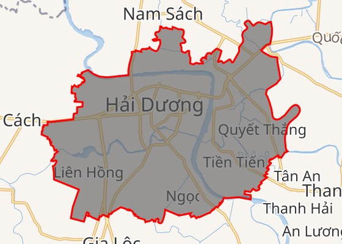
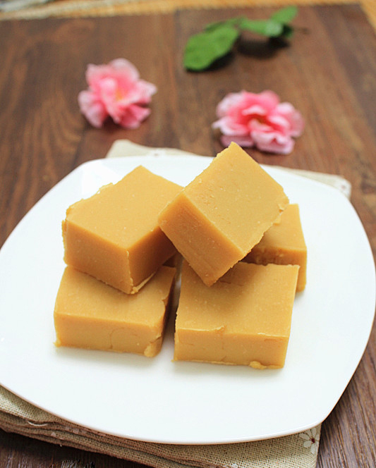
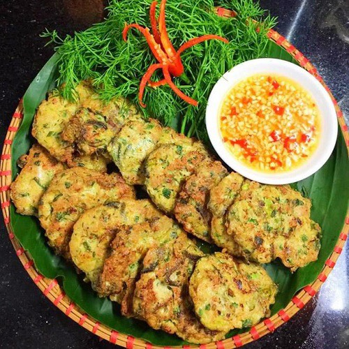

Hải Dương là thành phố tỉnh lỵ của tỉnh Hải Dương, Việt Nam. Thành phố Hải Dương là trung tâm kinh tế, kỹ thuật, giáo dục, khoa học, y tế, dịch vụ của tỉnh Hải Dương, nằm trong vùng thủ đô Hà Nội và tam giác kinh tế Hà Nội - Hải Phòng - Quảng Ninh. Thành phố Hải Dương hiện là đô thị loại I trực thuộc tỉnh Hải Dương.
Bánh đậu xanh Hoà An, từ thời xa xưa đã có tiếng là ngon nhất tỉnh Hải Dương vì chất lượng tuyệt hảo, hương vị truyền thốngvà đặc trưng của nó. Từng khối bánh vuông nhỏ từ bột đậu xanh nhuyễn mịn hòa cùng đường và dầu thực vật. Bánh được gói giấy bạc thấm mỡ thành thỏi. Khi ăn từng khối bánh lịm tan dần trong miệng. Thưởng thức hương vị bánh truyền thống, đặc sản quê hương Hải Dương cùng chén trà ấm thơm dịu dàng sẽ đem lại những trải nghiệm không kém phần thi vị.
Bánh đậu xanh Hoà An, từ thời xa xưa đã có tiếng là ngon nhất tỉnh Hải Dương vì chất lượng tuyệt hảo, hương vị truyền thốngvà đặc trưng của nó. Từng khối bánh vuông nhỏ từ bột đậu xanh nhuyễn mịn hòa cùng đường và dầu thực vật. Bánh được gói giấy bạc thấm mỡ thành thỏi. Khi ăn từng khối bánh lịm tan dần trong miệng. Thưởng thức hương vị bánh truyền thống, đặc sản quê hương Hải Dương cùng chén trà ấm thơm dịu dàng sẽ đem lại những trải nghiệm không kém phần thi vị.
Khoang Xanh nằm ở sườn phía đông của núi Ba Vì, trong một khu vực có rừng nguyên sinh, và thuộc quần thể vườn quốc gia Ba Vì. Khoang Xanh có nhiều khoảng rừng nguyên sinh và có trên 2 km suối tự nhiên. Mùa hè, những dòng thác đẹp như thác Mơ, thác Hoa, thác Tràn, thác Mâm Xôi... ngày đêm đổ xuống từ trên núi. Ngoài khu vực suối và rừng tự nhiên, Khoang Xanh còn nhiều khu vực nhân tạo khác như: công viên nước, hồ tắm khoáng, khu vui chơi dành cho cả trẻ em và người lớn, bùn khoáng nóng...
Vũ Bằng đã từng nhắc đến rươi với một sự ví von đầy hài hước “Ở Bắc Việt, ăn rươi là một thông lệ, đến mùa mà không được ăn thì như một người đàn bà đẹp đã để phí mất tuổi hoa”. Quả là như vậy, với những ai đã từng được thưởng thức hương vị của các món ăn chế biến từ rươi chắc chắn sẽ không bao giờ quên, dường như nó sẽ lưu lại một dấu ấn sâu đậm đối với vị giác. Để rồi mỗi khi mùa thu đến mà không được nếm lại món ăn này sẽ có cảm giác thật tiếc nuối. Rồi từ đó thôi thúc chúng ta phải tìm đến và thưởng thức bằng được. Nó có sự hấp dẫn đến vậy cơ mà. Mùa rươi khá ngắn, nếu bạn bỏ lỡ chính vụ thì chỉ có thể ăn muộn màng sau mùa rươi chiêm, có khi phải đợi đến tận sang năm, mùa rươi mới được ăn.